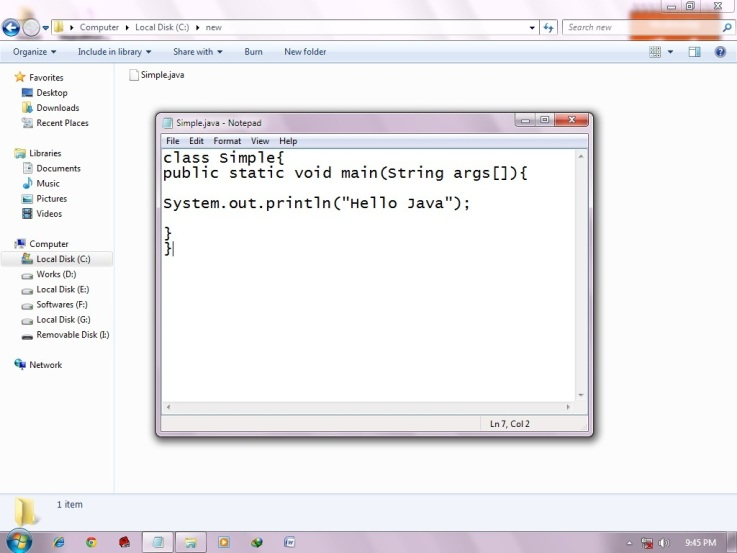
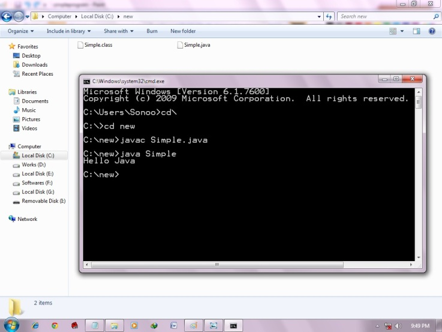

Simple Program of Java
In this page, we will learn how to write the simple program of java. We can write a simple hello java program easily after installing the JDK.
To create a simple java program, you need to create a class that contains main method. Let's understand the requirement first.
Requirement for Hello Java Example
For executing any java program, you need to
- install the JDK if you don't have installed it, download the JDK and install it.
- set path of the jdk/bin directory. http://www.javatpoint.com/how-to-set-path-in-java
- create the java program
- compile and run the java program
Creating hello java example
Let's create the hello java program:
class Simple{
public static void main(String args[])
{
System.out.println("Hello Java");
}
Understanding first java program
Let's see what is the meaning of class, public, static, void, main, String[], System.out.println().
- class keyword is used to declare a class in java.
- public keyword is an access modifier which represents visibility, it means it is visible to all.
- static is a keyword, if we declare any method as static, it is known as static method. The core advantage of static method is that there is no need to create object to invoke the static method. The main method is executed by the JVM, so it doesn't require to create object to invoke the main method. So it saves memory.
- void is the return type of the method, it means it doesn't return any value.
- main represents startup of the program.
- String[] args is used for command line argument. We will learn it later.
- System.out.println() is used print statement. We will learn about the internal working of System.out.println statement later.
To write the simple program, open notepad by start menu -> All Programs -> Accessories -> notepad and write simple program as displayed below:
As displayed in the above diagram, write the simple program of java in notepad and saved it as Simple.java. To compile and run this program, you need to open command prompt by start menu -> All Programs -> Accessories -> command prompt.
To compile and run the above program, go to your current directory first; my current directory is c:\new . Write here:
To compile: javac Simple.java
To execute: java Simple